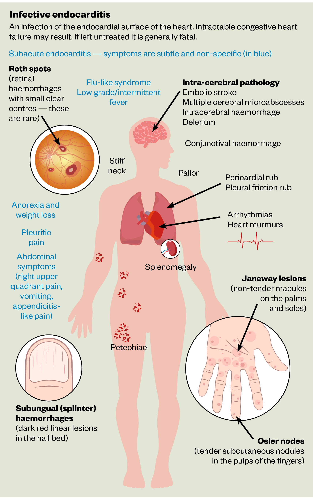
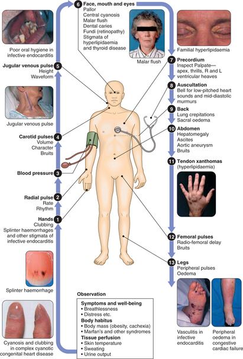
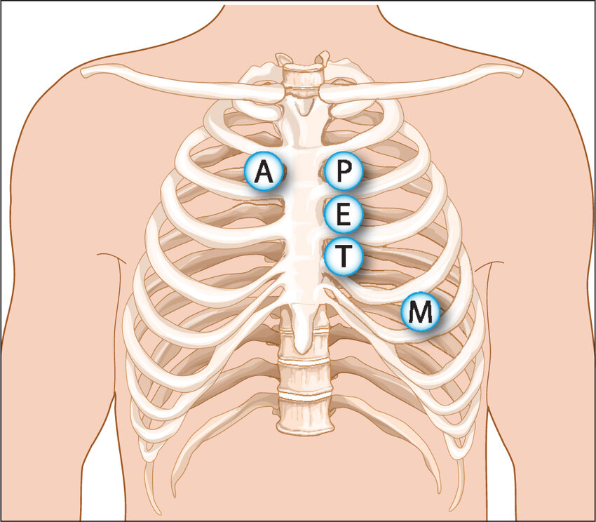
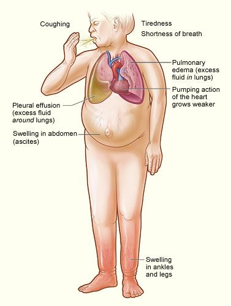

Cardiovascular checklist


WIPPER and the intro
General look of the patient
Vital Signs
Hands - Inspection
Starting with the hand
Moving on to the nails
End this section by examining for tremor
Hands - Palpation
Check pulses bilaterally, details below
All pulses are done with 2 fingers, except for radial;
Radial pulse
Brachial pulse
Carotid pulse
Femoral (mention only), posterior tibial and dorsalis pedis are done in PVS. We do them if the station was a focused pulses station
Face
JVP Examination
As JVP is very important and might be a full station on its own, make sure you’re ready for it.
Inspection
Palpation
JVP is normally impalpable, so make this comment and move on
Measuring JVP
Precordium Examination
Inspection
From the foot of the bed;
From the right side of the pt;
-
- Midsternotomy is for CABG
- Left submammary is for mitral valvotomy
- Infraclavicular is for pacemakers
And mention no scars
- Midsternotomy is for CABG
Palpation
Apex beat
Heaves
Thrills
Auscultation

Differentiate S1/S2 by feeling carotid pulse while auscultating the patient
- First, with the diaphragm, 4 valvular spots and 2 radiation spots
- Second, with the bell, 4 spots
- Last, finish with 2 maneuvers
Ending the station
